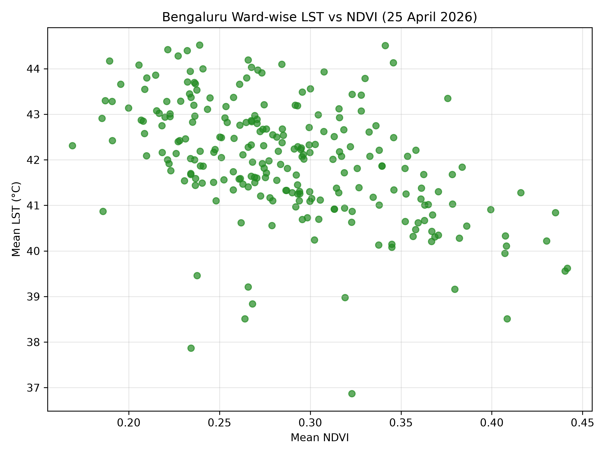
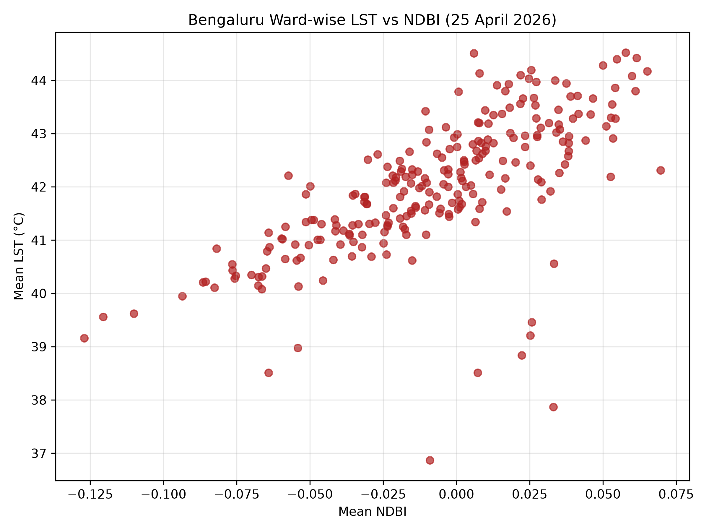
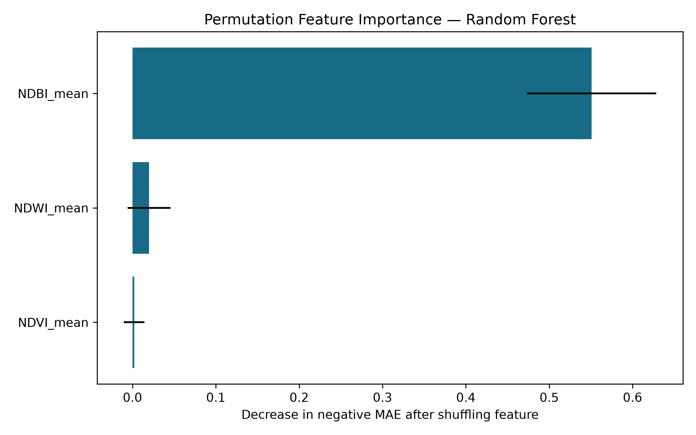

Mean City LST
42.33 °C
Pixel-weighted mean across valid 30 m satellite pixels
Engineering Project · Satellite Heat Intelligence
Explore ward-level land surface temperature, vegetation, built-up intensity, and water/wetness signals. Click a ward to see why it is relatively hot or cool and view possible heat-mitigation interventions.
These are observed, cloud-masked Landsat 9 results for Bengaluru on 25 April 2026. LST is surface temperature, not weather-station air temperature.
Mean City LST
42.33 °C
Pixel-weighted mean across valid 30 m satellite pixels
Mean NDVI
0.3107
Vegetation indicator; higher values generally indicate greener surfaces
Mean NDBI
−0.0104
Built-up surface indicator; higher values can indicate stronger built-up response
Mean NDWI
Pending
Water/wetness indicator; updated after NDWI calculation
Select an indicator, then click a ward. The Heat Profile panel will explain its measured surface conditions and suggest interventions.
−0.4837
Wards with more vegetation generally tend to have lower daytime land-surface temperature.
+0.6870
Wards with a stronger built-up signal generally tend to have higher daytime land-surface temperature.


The ward-specific suggestions in this prototype are generated by transparent rules using LST, NDVI, NDBI, and NDWI. After model training, the same panel can show model-predicted LST/UHI and feature-based explanations.
Three regression models were evaluated to estimate ward-level mean land surface temperature using NDVI, NDBI, and NDWI. Random Forest achieved the best performance and was selected for this prototype.
Selected model
Random Forest
Best overall validation performance among tested models
Mean Absolute Error
0.5748 °C
Average absolute error on held-out test wards
RMSE
0.8418 °C
Prediction error with stronger penalty for larger mistakes
R²
0.3443
Share of test-set LST variation explained by this prototype
| Model | MAE (°C) | RMSE (°C) | R² |
|---|---|---|---|
| Random Forest | 0.5748 | 0.8418 | 0.3443 |
| LightGBM | 0.5943 | 0.8837 | 0.2774 |
| XGBoost | 0.6667 | 1.0092 | 0.0576 |
Important limitation: This is a single-date, ward-level prototype based on 243 wards observed on 25 April 2026. It is not yet a temporally independent operational forecast. Future work should add multi-season satellite data, population density, road and building information, tree-canopy data, and spatial/temporal validation.
Permutation feature importance was calculated for the selected Random Forest model. This test measures how much prediction performance changes when one feature is randomly shuffled. Larger positive values indicate greater model reliance.
Primary heat-associated feature
NDBI
Permutation importance: 0.5508 ± 0.0777
NDWI contribution
0.0199
Weak added contribution in the current prototype
NDVI contribution
0.0020
Near-zero independent contribution after other variables are included

Interpret carefully: Feature importance describes this model and dataset, not a universal causal ranking. NDVI remained negatively correlated with observed LST, but it may overlap statistically with the built-up signal in this one-date, 243-ward dataset.
Model-status note: the current public map contains observed satellite measurements and rule-based interventions. A predictive model should be trained and validated using multiple satellite dates before its predictions are presented as operational forecasts.